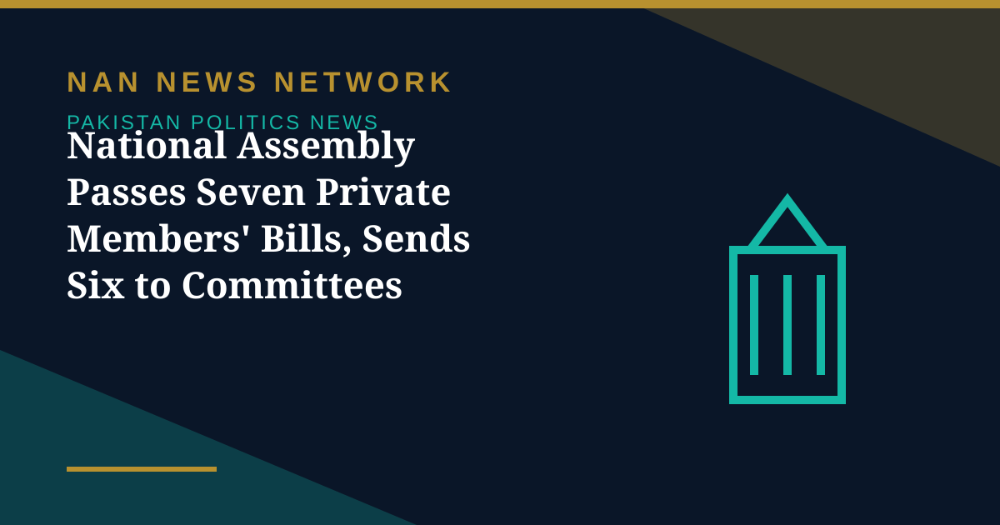

National Assembly Passes Seven Private Members' Bills, Sends Six to Committees

The National Assembly on Tuesday passed seven private members' bills by majority vote after clause-by-clause consideration, Associated Press of Pakistan reported. The bills cleared by the House covered science and technology, corporate social responsibility, evidence law, senior citizens, criminal procedure and children's rights.
The bills passed included the Pakistan Council for Science and Technology (Amendment) Bill, 2025; the Corporate Social Responsibility Bill, 2026; the Qanun-e-Shahadat (Amendment) Bill, 2026; the Islamabad Capital Territory Senior Citizens (Amendment) Bill, 2025; the Code of Criminal Procedure (Amendment) Bill, 2024 (Schedule-II); the National Commission on the Rights of Child (Amendment) Bill, 2025; and the Criminal Law (Amendment) Bill, 2025.
Six bills sent to committees
Meanwhile, six other bills were referred to the relevant committees for further deliberation and review. These included the Factories (Amendment) Bill, 2025, to amend the Factories Act, 1934; the Anti-Rape (Investigation and Trial) (Amendment) Bill, 2024, to amend the Anti-Rape (Investigation and Trial) Act, 2021; and the Islamabad Rent Restriction (Amendment) Bill, 2025, to amend the Islamabad Rent Restriction Ordinance, 2001.
Also referred to committees were the National Highways Safety (Amendment) Bill, 2025, to amend the National Highways Safety Ordinance, 2000; the Payment of Wages (Amendment) Bill, 2025, to amend the Payment of Wages Act, 1936; and the Criminal Laws (Amendment) Bill, 2025, seeking amendments to the Pakistan Penal Code, 1860, and the Code of Criminal Procedure, 1898.
Parliamentary business continues
Private members' bills are legislation introduced by members who are not ministers, and their passage through clause-by-clause consideration is part of the Assembly's regular legislative work. Bills referred to committees will return to the House after the committees complete their deliberations, at which point members can debate and vote on them. The Assembly's handling of a large batch of bills in a single sitting reflects the volume of pending legislative business before the House.
Sources: UrduPoint / Pakistan Point News (APP), October 27, 2026.
More on Pakistan Politics News
- Pakistan Marks Kashmir Black Day With Rallies Across the Country
- Pakistan Strongly Condemns Houthi Missile Attacks Near Makkah and Madinah
- Pakistan, Saudi Arabia and Turkiye Reported to Hold Tehran Talks on De-escalation
- Pakistan LPG Shortage Worsens as Iran Border Crossings Close
- Pakistan Ends Machine-Readable Passports and Switches Fully to E-Passports
- Pakistan Calls for a Fairer Global Order at the United Nations